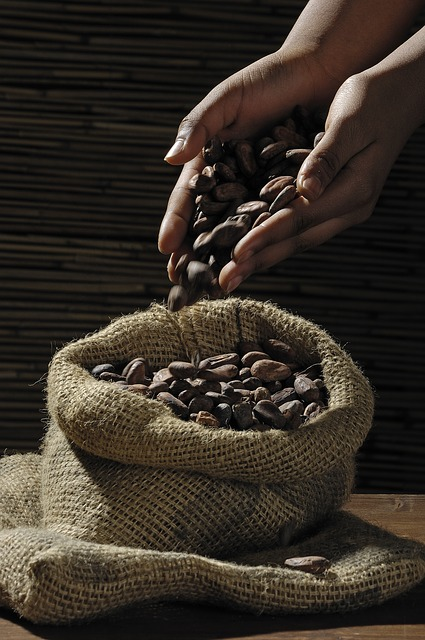

All cocoa products are made from cocoa beans, which grow on Cacao Trees. Thousands of years ago, cocoa beans were discovered in South American rain forests where the humid and tropical climate mixed with elevated rainfall created the perfect place for cocoa trees to grow.
Cocoa beans have been a prevalent part of Central American cultures, specifically the Mayan civilization, for hundreds of years. The Mayan civilization worshiped the cocoa tree and gave it the Latin name Cocoa which means “Food of the Gods.” It was used for many different purposes. The Mayans created a ritual beverage made from ground cocoa beans, vanilla beans and other spices. It was shared during betrothal and marriage ceremonies. It was also used as a form of currency between their own civilizations and those they traded with.
Eventually the Spanish discovered cocoa beans and began to covet them for trading. Initially, the Spaniards kept the secret of production to themselves, which gave them the upper hand in a monopoly on the chocolate market in Europe.
Around the mid-1600’s the Spanish no longer monopolized the chocolate market. The cocoa bean and all its versatility became very popular. The wealthy people of France loved it. In the 1700’s, a Frenchman opened the very first hot chocolate shop in London. Not long after, “chocolate houses” were easily found all over London.
By the 18th century, every country from England to Austria was producing confections from the cocoa bean. When the steam engine was invented, so was mechanized cocoa bean grinding. With this quicker and easier production process, prices reduced and cocoa bean products became more affordable to everyone— not just the rich.
These days people across the world consume more than 3 million tons of cocoa beans each year! Preparation of cocoa beans still varies place-to-place but the variations make for all kinds of tasty treats. Cocoa has definitely become a staple baking ingredient in almost any recipe.